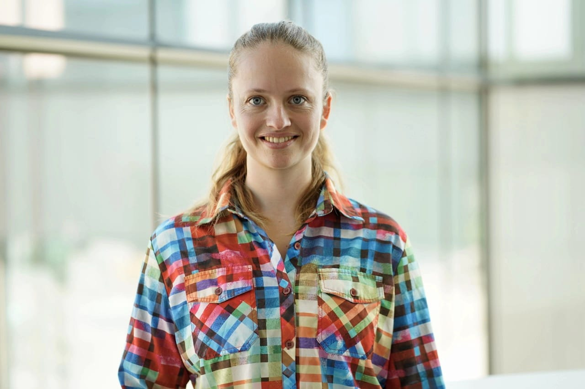
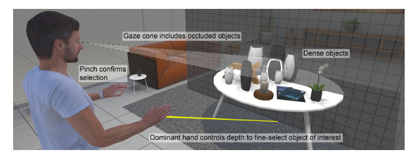

HCI Researcher · XR · Gaze & Multimodal Interaction
I study how perception and action divide the work between them — and how to design systems that get that division right. From interaction in 3D space to how people perform under pressure, I'm interested in the gap between what systems assume and what humans actually do.

About
I am an HCI researcher working on gaze-based interaction, extended reality, and how people perform in high-stakes situations. A thread that runs through everything I do: systems work best when they respect what humans are already good at — and step in precisely where they aren't.
My PhD at Aarhus University, Denmark (Prof. Ken Pfeuffer & Prof. Hans Gellersen) explored how gaze and hand input can work together in 3D environments — studying selection, manipulation, and the interplay between the two modalities. I then spent a year as a postdoc at the HCI Lab of TT-Prof. Tiare Feuchtner at the University of Konstanz.
Since March 2026 I am a Research Associate at Deggendorf Institute of Technology · Campus Vilshofen with Prof. Manfred Vielberth. My current work sits at the intersection of AI-assisted learning and human-centered security. I am studying how AI should be integrated into educational contexts without eroding the learner's own competence — and why current cybersecurity training tends to fail exactly when it matters most: the moment an actual attack happens, people are under stress, and the gap between what was taught and what can be recalled becomes critical.
Current Research
Ongoing investigations at Deggendorf Institute of Technology · Campus Vilshofen.
AI is entering educational contexts faster than we understand it. I'm investigating how AI tools should be designed for lectures and learning environments — with a focus on preserving the learner's active engagement rather than replacing it. Good design here isn't about what AI can do; it's about what it should hold back.
Most cybersecurity training is designed for calm, attentive conditions — but real incidents happen under stress, time pressure, and uncertainty. I'm studying the mismatch between how people are trained and how they actually respond when an attack occurs, and what it would take to close that gap.
Past Research · Publications
Peer-reviewed research in HCI, extended reality, and gaze-based interaction.

Rotate to browse · click to open
Contact
Open to collaborations, speaking invitations, and research discussions
in HCI, XR, AI-assisted learning, or human-centered security.
uta.wagner@th-deg.de